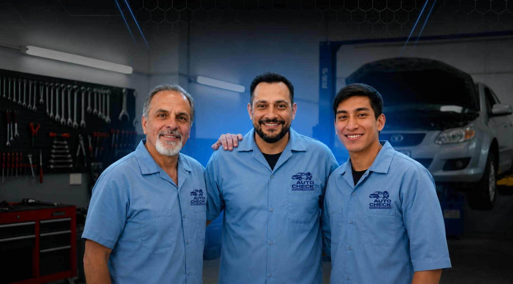

AutoCheck comenzó como un pequeño taller familiar con una misión sencilla: brindar un servicio automotriz honesto y confiable a nuestra comunidad. Lo que empezó con solo dos mecánicos y una pasión por los autos se ha convertido en un servicio completo.
Hoy, estamos orgullosos de servir a miles de clientes con los mismos valores que fundaron nuestra empresa: integridad, calidad y cuidado genuino de cada vehículo que ingresa a nuestro taller.
2004
Fundado
5000+
Clientes satisfechos
